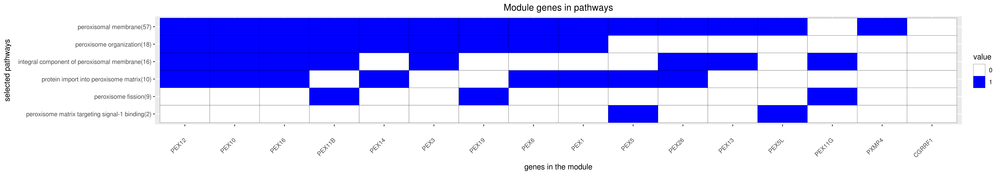

Back to main page
DREAM Module Identification Challenge – Consensus modules
PPI-STRING_Consensus_mod251
| Assigned name |
NA |
| Network |
PPI-STRING |
| Module ID |
PPI-STRING_Consensus_mod251 |
| Module size |
17 genes |
|
Module genes
This module comprises the following genes:
| Gene ID |
Gene Symbol |
Gene Name |
| 10668
|
CGRRF1
|
cell growth regulator with ring finger domain 1
|
| 5189
|
PEX1
|
peroxisomal biogenesis factor 1
|
| 5192
|
PEX10
|
peroxisomal biogenesis factor 10
|
| 8799
|
PEX11B
|
peroxisomal biogenesis factor 11 beta
|
| 92960
|
PEX11G
|
peroxisomal biogenesis factor 11 gamma
|
| 5193
|
PEX12
|
peroxisomal biogenesis factor 12
|
| 5194
|
PEX13
|
peroxisomal biogenesis factor 13
|
| 5195
|
PEX14
|
peroxisomal biogenesis factor 14
|
| 9409
|
PEX16
|
peroxisomal biogenesis factor 16
|
| 5824
|
PEX19
|
peroxisomal biogenesis factor 19
|
| 55670
|
PEX26
|
peroxisomal biogenesis factor 26
|
| 8504
|
PEX3
|
peroxisomal biogenesis factor 3
|
| 5830
|
PEX5
|
peroxisomal biogenesis factor 5
|
| 51555
|
PEX5L
|
peroxisomal biogenesis factor 5 like
|
| 5190
|
PEX6
|
peroxisomal biogenesis factor 6
|
| 11264
|
PXMP4
|
peroxisomal membrane protein 4
|
| 53346
|
TM6SF1
|
transmembrane 6 superfamily member 1
|
|
Functional annotation
Modules were tested for enrichment in functional and pathway annotations using two complementary approaches:
1. To select a small number of specific / non-redundant annotations for each module, a regression-based approach was used;
2. To obtain the complete set of enriched annotations, an extension of Fisher’s exact test that takes annotation bias into account was employed (Wallenius’ non-central hypergeometric distribution).
Most specific annotations for this module
1Regression coefficient
2Fisher’s exact test nominal P-value
3Annotation source (Reactome, GO biological process (BP), molecular function (MF) and cellular component (CC))
4GO category or Reactome pathway
5High-level branch of annotation tree
Gene membership

All enriched annotations
Gene Ontology
11Nominal enrichment p-value (Wallenius’ noncentral hypergeometric distribution)
2FDR corrected p-value (Benjamini-Hochberg)
Reactome
| P-value1 |
FDR2 |
Term |
| 1.14e-04
|
1.43e-02
|
ABCA TRANSPORTERS IN LIPID HOMEOSTASIS
|
| 1.39e-04
|
1.72e-02
|
ABC FAMILY PROTEINS MEDIATED TRANSPORT
|
| 1.63e-04
|
2.40e-02
|
ABCA TRANSPORTERS IN LIPID HOMEOSTASIS
|
| 1.68e-04
|
2.46e-02
|
ABC FAMILY PROTEINS MEDIATED TRANSPORT
|
| 1.40e-02
|
1.00e+00
|
TRANSMEMBRANE TRANSPORT OF SMALL MOLECULES
|
|
11Nominal enrichment p-value (Wallenius’ noncentral hypergeometric distribution)
2FDR corrected p-value (Benjamini-Hochberg)
Mouse mutant phenotypes
11Nominal enrichment p-value (Wallenius’ noncentral hypergeometric distribution)
2FDR corrected p-value (Benjamini-Hochberg)
Generated on: Thu Aug 30 17:32:08 2018 - R2HTML